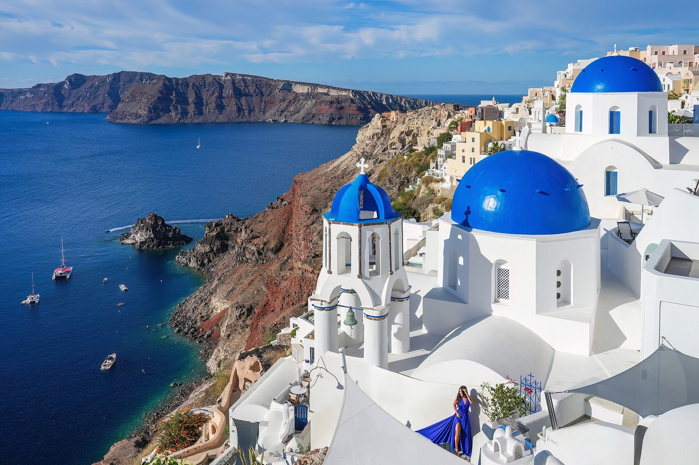
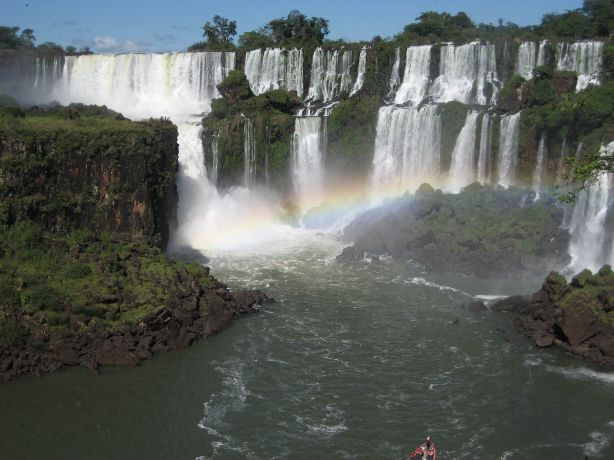
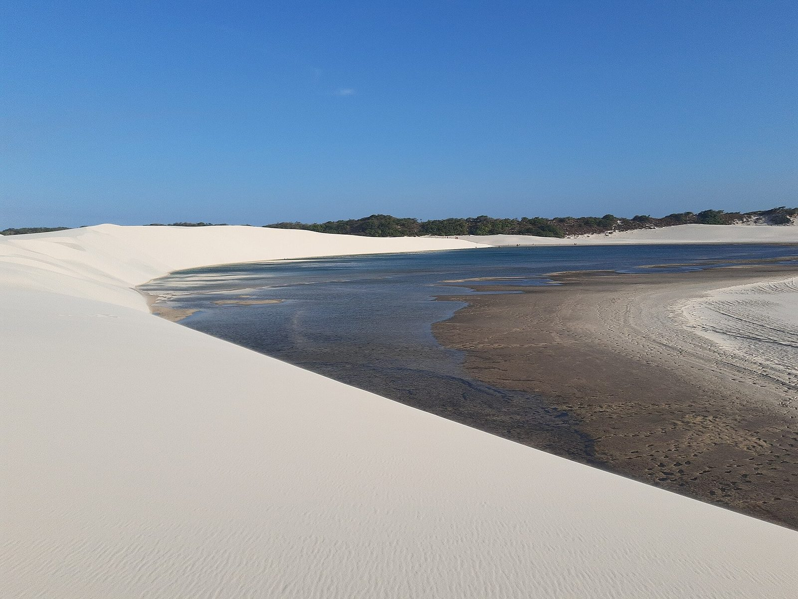

Material
Envolva uma caixa com fundo translúcido: ela vira vidro. Fosco, tonalizado e com borda clara em todo navegador; a curvatura ao vivo aparece no Chrome e no Edge.
Amostra · liquid-glass
Uma lente que refrata o DOM ao vivo: o texto continua selecionável e os links continuam clicáveis.
Mova o cursor sobre a imagem para guiar a lente.Toque e arraste na imagem para guiar a lente.
Cada cartão é um <Glass refract>: ele refrata uma cópia alinhada do gradiente de fundo, e o conteúdo fica nítido por cima. Os botões abaixo são o modo material.
Envolva uma caixa com fundo translúcido: ela vira vidro. Fosco, tonalizado e com borda clara em todo navegador; a curvatura ao vivo aparece no Chrome e no Edge.
Dê geometria (size + center) e a lente dobra os próprios filhos, como no topo desta página. Funciona no Chrome, Safari e Firefox.
Para flutuar sobre conteúdo que não é seu, passe uma cópia em refract e uma cor de borda em behind. Este cartão faz exatamente isso.
Legendas de vidro no modo material sobre fotos de lugares famosos. No Chrome e no Edge a foto se curva atrás da legenda; no Safari e no Firefox ela fica fosca.



Resumo do BROWSERS.md da biblioteca.
Fidelidade total. O modo material também curva a página ao vivo atrás do vidro (backdrop-filter: url() só existe no Blink).
Lente no lugar e refract refratam de verdade, com aberração cromática e brilho. O modo material fica fosco + tonalizado, sem curvatura. O Safari roda sempre em 1×.
O conteúdo é HTML comum. Se o módulo não carregar, os mesmos elementos ficam com um blur em CSS, como na página inicial.